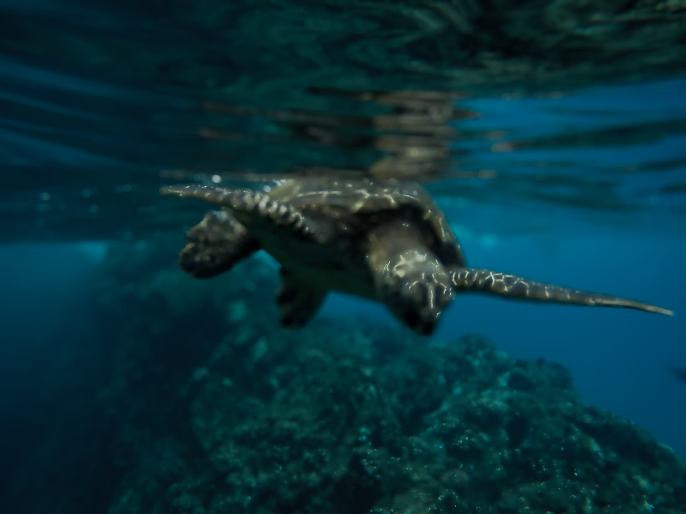
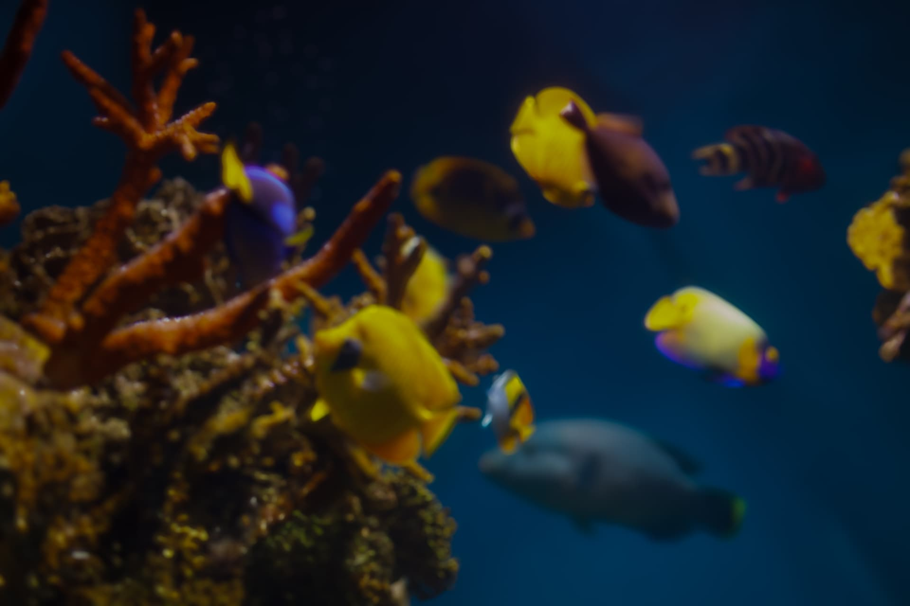
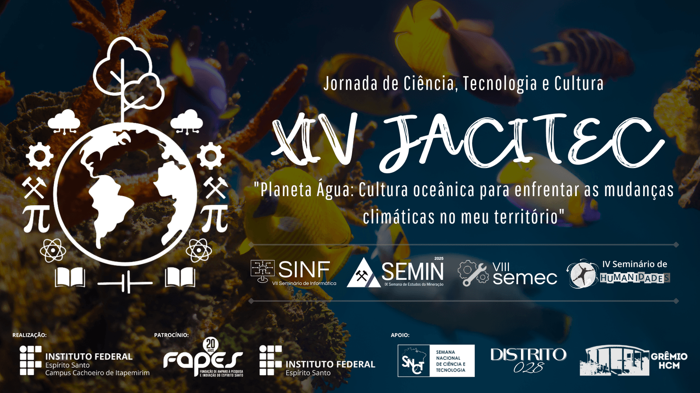

A Jornada Acadêmica de Ciência, Tecnologia e Cultura - JACITEC do Ifes - Campus Cachoeiro de Itapemirim é um evento de extensão cujo principal objetivo é divulgar as atividades de ensino, pesquisa e extensão desenvolvidas no campus para a comunidade interna e externa, além de promover a integração entre os participantes de diversas áreas. A temática abordada durante o evento segue o proposto para a Semana Nacional de Ciência e Tecnologia do ano vigente, abordando assim temas de relevância na atualidade.

A JACITEC busca disseminar à comunidade interna e externa, as atividades de integração ensino, pesquisa e extensão dos diferentes e diversos cursos e programas ofertados pelo campus, além de integrar participantes de áreas distintas a partir de uma programação variada e proposta pelos cursos técnicos intercomplementar, concomitantes e integrados em Mineração, Eletromecânica, Informática e Informática para Internet, pelos cursos superiores de Engenharia de Minas, Engenharia Mecânica, Sistemas de Informação, Licenciatura em Matemática e pelos cursos de pós-graduação em Tecnologia de Produção de Rochas Ornamentais, Ensino de Ciências Naturais com ênfase em Química ou Física e Aperfeiçoamento em Mentorial para a Educação Profissional, Indústria 4.0, e pelos cursos de Mestrado Profissional em Docência na Educação Profissional e Tecnológica - ProfDocênciaEPT e Mestrado em Engenharia Metalúrgica e de Materiais - PROPEMM.
O evento engloba em sua grade as semanas de cursos do Ifes - Campus Cachoeiro de Itapemirim, sendo elas: Seminário de Informática(SINF), Semana de Estudos da Mineração(SEMIN), Semana da Engenharia Mecânica(SEMEC)

Desde sua criação em 2009, a Jornada Acadêmica de Ciência, Tecnologia e Cultura do Ifes - Campus Cachoeiro de Itapemirim tem se consolidado como um espaço de integração entre ensino, pesquisa, extensão e cultura. Ao longo dos anos, cada edição buscou dialogar com temas nacionais e regionais, fortalecendo a produção científica e promovendo a troca de experiências entre estudantes, professores, pesquisadores e a comunidade externa.
Em 2013, a quarta edição trouxe como tema “Ciência, saúde e esporte”, iniciando uma trajetória de debates interdisciplinares que, no ano seguinte, se ampliou na quinta edição, realizada em novembro de 2014, marcada pela consolidação de atividades culturais, científicas e tecnológicas. A sexta e a sétima edições, em 2015 e 2016, deram continuidade a esse movimento, estimulando a reflexão crítica sobre questões sociais, como no tema “O Brasil tem fome de quê?”. Em 2017, a oitava JACITEC aproximou a comunidade da Semana Nacional de Ciência e Tecnologia, explorando o mote “A Matemática está em tudo”. Já em 2018, a nona edição destacou a importância da ciência para a redução das desigualdades, enquanto, em 2019, a décima edição abordou a bioeconomia como caminho para o desenvolvimento sustentável.

Após a interrupção das atividades presenciais durante a pandemia, o evento retornou em 2022 com sua décima primeira edição, realizada entre 7 e 10 de novembro, reforçando a vocação acadêmica e cultural do Campus. Em 2023, a décima segunda edição retomou com força total o diálogo com a comunidade acadêmica e a sociedade, alinhando-se ao tema “Ciências básicas para o desenvolvimento sustentável”. No ano seguinte, em 2024, a décima terceira JACITEC destacou os “Biomas do Brasil: diversidade, saberes e tecnologias sociais”, valorizando a riqueza natural do país e o papel da ciência na preservação e no uso sustentável desses recursos, além de inovar com sua mostra científica que serviu de classificatória para Feira de Ciência e Inovação Capixaba.
Assim, cada edição do evento representa um marco no compromisso do Ifes – Campus Cachoeiro de Itapemirim com a difusão da ciência e o incentivo à participação cultural e social, reforçando a identidade de um evento que cresce a cada ano e se consolida como referência regional.
A XIV Jornada acontecerá de 22 a 24 de outubro de 2025 e sua programação inclui: palestras, oficinas, exposições, mostra científica, apresentações artístico-culturais e outras atividades que são realizadas dentro dos espaços de vivência e aula do campus. O evento faz parte da 22ª Semana Nacional de Ciência e Tecnologia (SNCT) e tem como tema "Planeta Água: Cultura oceânica para enfrentar as mudanças climáticas no meu território".

Dentro de nossa jornada diversas atividades são realizadas, confira em nossa agenda as nossas atividades desse edição e seus horários!
A inscrição prévia é muito importante para a emissão de certificados e controle do evento.
Acessar seu PerfilA Mostra Científica é o coração da Jornada Acadêmica de Ciência, Tecnologia e Cultura do Ifes - Campus Cachoeiro de Itapemirim. É nela que estudantes, professores e pesquisadores apresentam seus trabalhos, compartilham descobertas e dialogam sobre soluções para os desafios atuais da sociedade.
A Mostra Científica da JACITEC é uma oportunidade única para que os participantes possam expor seus projetos de pesquisa, inovação tecnológica e extensão, promovendo a troca de conhecimentos e experiências entre diferentes áreas do saber. Além disso, a mostra serve como um espaço de incentivo à criatividade e ao pensamento crítico, fundamentais para o desenvolvimento científico e tecnológico.
Os trabalhos apresentados na Mostra Científica são avaliados por uma comissão especializada, que leva em consideração critérios como originalidade, relevância, metodologia e impacto social. Os melhores projetos são reconhecidos e premiados, incentivando a continuidade das pesquisas e o engajamento dos participantes.
Os trabalhos apresentados na Mostra Científica serão avaliados por área e com base nos seguintes critérios:
Vale ressaltar que cada trabalho terá uma nota máxima de 100 pontos e em caso de empate, os critérios de desempate serão, na seguinte ordem: maior nota em "Originalidade e Inovação", seguido de maior nota em "Relevância e Aplicação Prática" e, por fim, maior nota "Sustentabilidade e Impacto Ambiental". O resultado final será publicado no final da tarde do último dia do evento: 16/10/2024. Boa sorte e até.
Obs: A apresentação do banner impresso é obrigatória para a participação no evento
Confira abaixo a localização do evento:
Rod Engenheiro Fabiano Vivácqua,
CEP: 29.322-000
Localidade Morro Grande
Cachoeiro de Itapemirim - ES
IFES Campus Cachopeiro de Itapemirim
Comissão Organizadora
Portaria Nº 402, de 15 de Setembro de 2025.